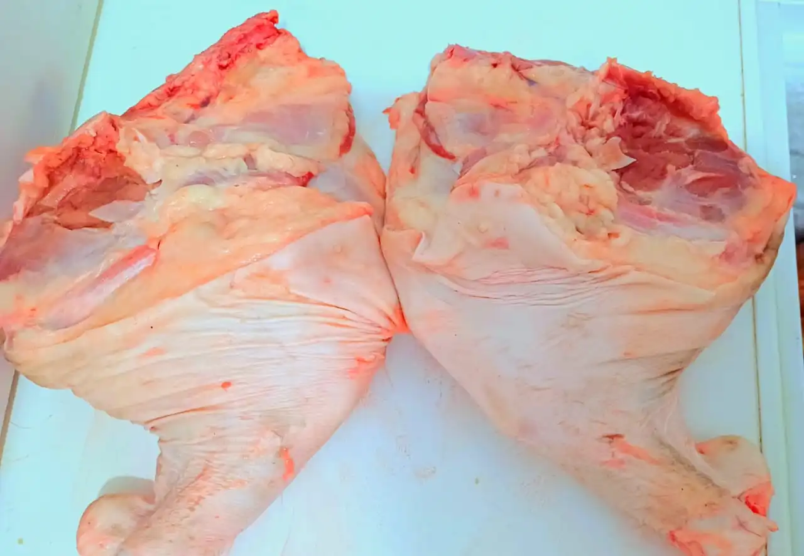
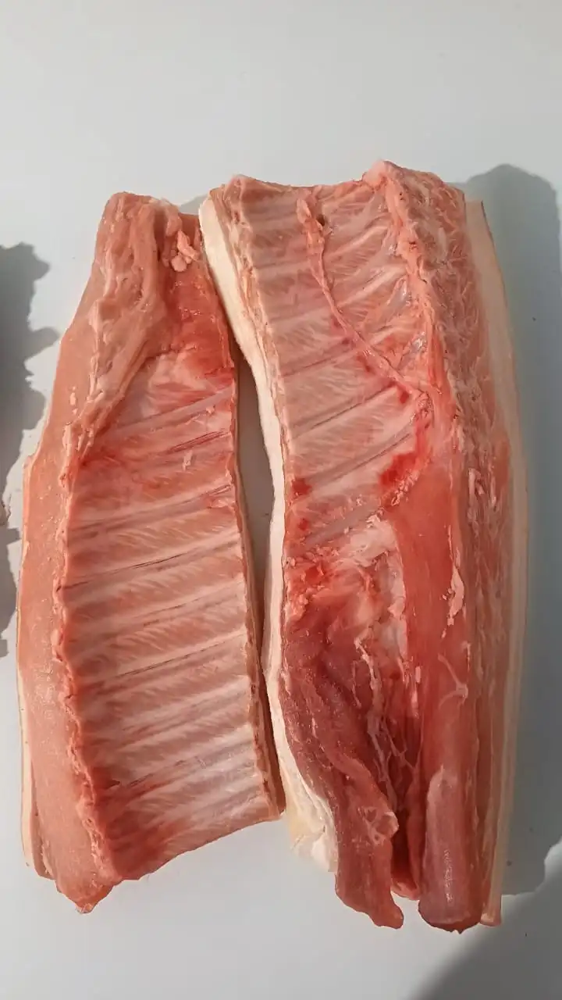
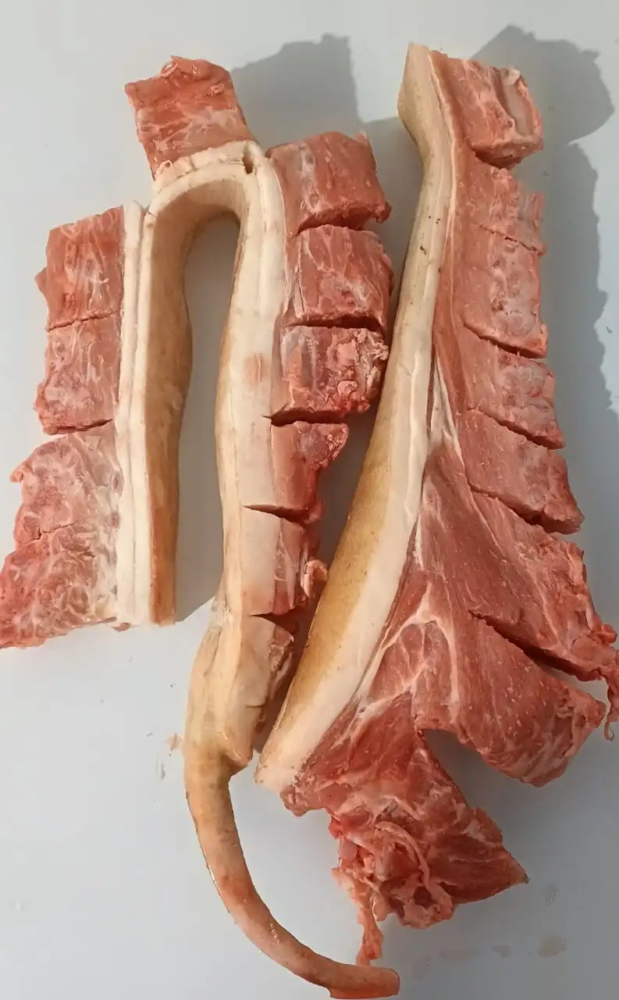
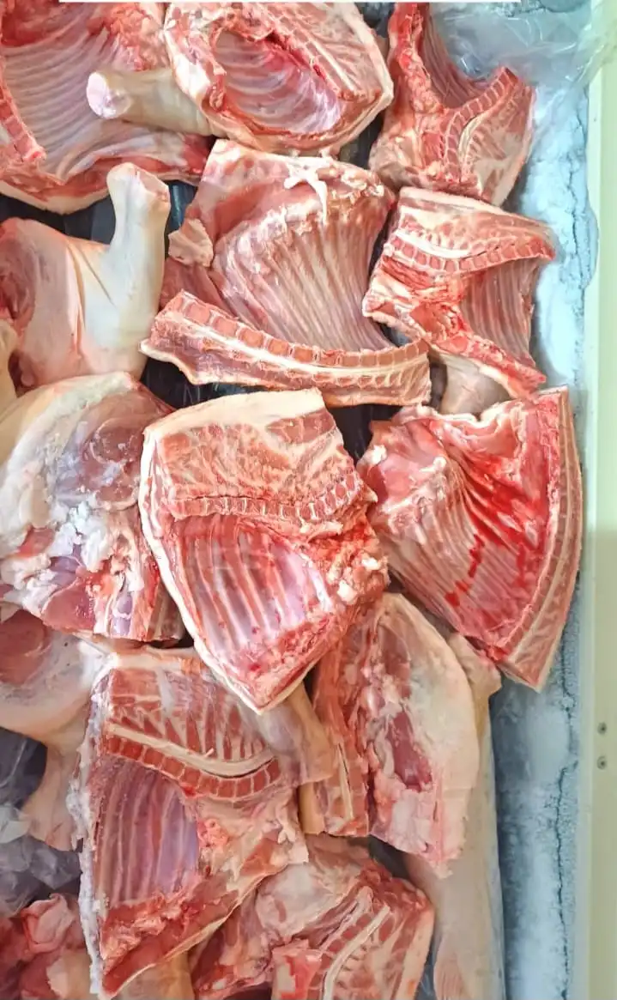
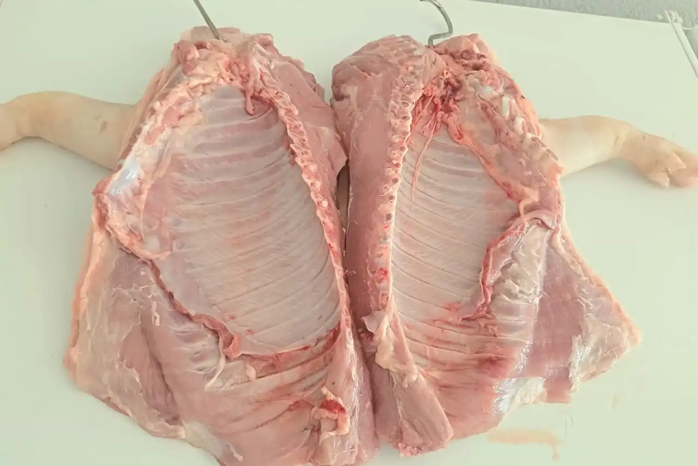
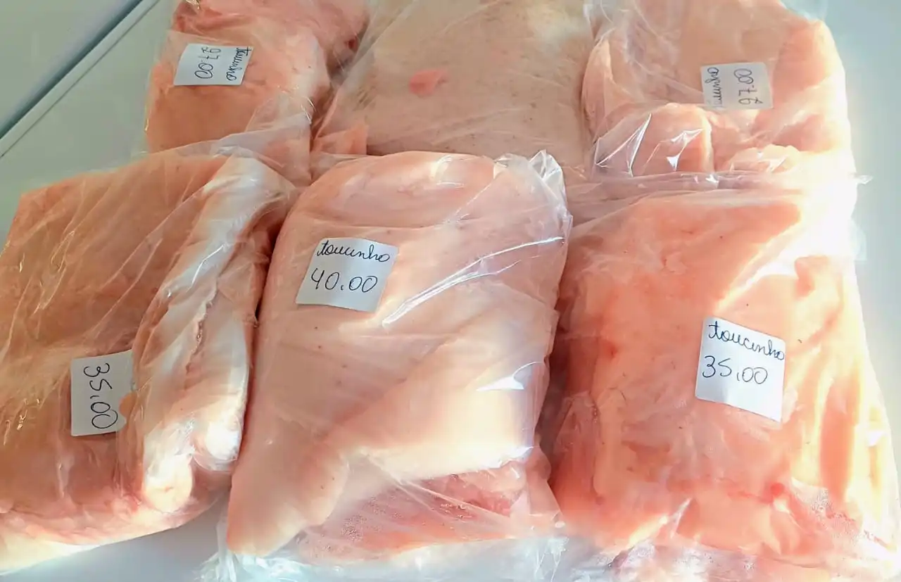
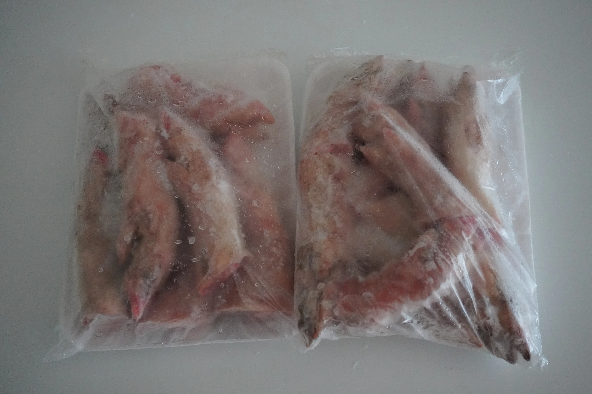

Porco Caipira
Escolha o Corte:
Retire na loja: R. Bom Jardim, 379 — Centro, Cáceres.
Porco Caipira: A Carne que as Fazendas de Mato Grosso Sempre Souberam Criar
Nas fazendas do interior de Mato Grosso, a criação de porco caipira é uma tradição que precede a industrialização da suinocultura em décadas. O porco caipira é criado solto em terreiros amplos, alimentando-se de raízes, frutas caídas, grãos e ração caseira preparada sem hormônios de crescimento ou antibióticos preventivos. Essa vida ao ar livre faz toda a diferença na composição da carne: o exercício diário desenvolve a musculatura de forma equilibrada e a gordura se distribui naturalmente entre as fibras, resultando em uma carne firme, suculenta e com um sabor que a carne suína industrializada simplesmente não consegue replicar.
A Diferença Está na Gordura Aromática
Quem já provou um pernil de porco caipira assado no forno de lenha entende imediatamente do que estamos falando. A gordura do porco caipira não é aquosa nem insípida como a do animal confinado: ela é densa, aromática e, ao derreter lentamente sobre a carne durante o cozimento, cria uma crosta caramelizada e um interior incrivelmente macio. É essa gordura que transforma um simples feijão com toicinho num prato memorável, que dá personalidade ao suan de domingo e que faz a costela sangrar suco dourado quando você corta na brasa.
Os Cortes Disponíveis e Como Aproveitá-los
Na Peixaria Rio Paraguai, trabalhamos com os principais cortes do porco caipira, cada um indicado para uma técnica de preparo diferente:
- Costela: Brasa lenta, de 3 a 4 horas em fogo indireto, coberta de sal grosso e alecrim. Resultado: carne que solta do osso na primeira mordida.
- Pernil: Assado inteiro no forno com vinho branco, alho, limão e ervas. Ideal para reuniões e festividades do interior.
- Suan: O corte preferido do interior mato-grossense para o ensopado de panela de pressão. A gordura do suan encorpa o caldo como nenhum outro corte.
- Paleta: Carne macia da parte dianteira, ótima para desfiar após cozimento lento ou grelhar em bifes grossos.
- Toicinho: Para fritar em cubinhos e dar sabor ao feijão, ao arroz e ao refogado de couve.
- Pé de Porco: Ingrediente fundamental para caldos encorpados e ricos em colágeno natural — o caldo que reconstitui e aquece.
Sazonalidade e Como Encomendar
O porco caipira segue ciclos naturais de criação — não é um produto disponível o ano inteiro como a carne industrial. Por isso, recomendamos fortemente consultar a disponibilidade pelo WhatsApp antes de fazer o pedido. Encomendas com antecedência garantem o corte de sua preferência e permitem que nossa equipe prepare a carne no ponto certo para a retirada. Na Peixaria Rio Paraguai, em Cáceres-MT, cada pedido é tratado com o cuidado de quem entende que a carne boa não pode ser apressada.